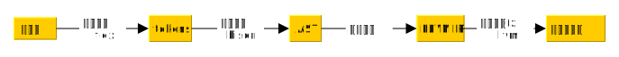
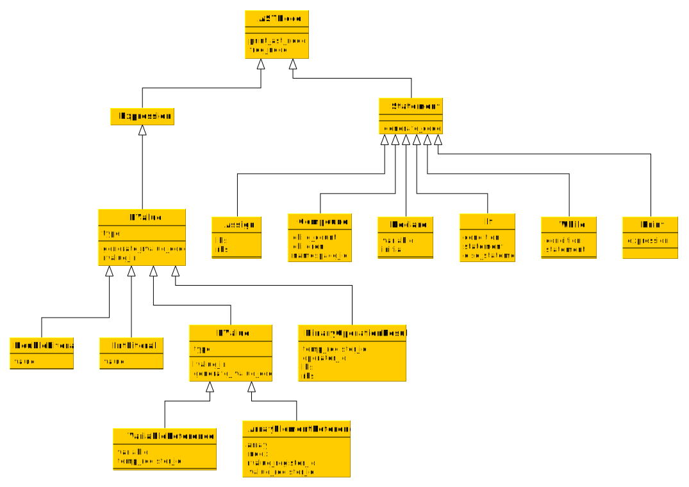

本文将会带领读者做出一个简单的类C（但比C简单无数倍）语言的编译器。
这个语言支持：
- 两种基本数据类型：
int和double - 上述数据类型的数组
- 两种控制结构：
if（当然可以有可选的else）和while - 基本数学和关系运算：
+、-、*、/、<、<=、>、>=、==、!=
本文假设读者是一个比较熟练的C语言1程序猿，并具有基本的正则表达式知识。
同时本文读者应当熟悉flex & bison的基本使用，如果你对此不熟悉，可以参考我的另一篇文章。
编译过程
首先本文中所述的编译器编译一个程序的过程如下2：

显然很多代码都不用我们自己写，生在这样一个有丰富工具的时代既是幸运，也是一种不幸。
词法分析
在此给出flex的关键部分代码：
1 | "char" {yylval.type=Char; return TYPE;} |
语法分析
在此给出bison的关键部分代码：
1 | program: |
注意此处没有给出相应的行为代码，因为首先需要理解AST才能明白这些行为。
AST（抽象语法树）
抽象语法树将语法分析得到的语法单元组织成树状。
基本上每个statement和expression都可以对应AST上的一个node。
本编译器的AST设计
部分参考了llvm的AST设计。

因此我们就能写出%union和%type：
1 | %union { |
整个程序是一个CompoundStatement，我们要把结果存在一个全局变量中：
1 | CompoundStatement *result; |
然后向bison代码中加入行为部分，以program和binaryOrAtomExpression为例：
1 | program: |
符号表与作用域
这个编译器由于不涉及多文件，也没有复杂类型，符号表的设计较为简单，维护一个全局符号表栈即可：
1 | typedef enum { |
其中get_symbol从栈顶向栈底寻找名字为name的符号。
在add_symbol时，会设置symbol的namespace_id为frame的namespace_id，这在代码生成时会作为变量名称的一部分出现。
在语法分析时：1
2
3block:
'{' {push_frame();} statementList '}' {$$=$3;pop_frame();}
;
每遇到一个block，就push一个frame，离开block时pop即可，这样这个block内声明的symbol就会获得一个和这个block对应的namespace_id。
在使用symbol时，由于刚刚进入的block对应的frame在栈顶附近，故会优先在这个frame中寻找名字为name的符号，在这个frame中找不到时才会逐级向上寻找，这样就实现了作用域。
目标代码生成
为了方便代码跨平台和借用llvm的优秀的代码优化能力3，我们的目标代码是LLVM IR。
LLVM IR兼有高级语言和汇编的特点，比如：
- LLVM IR是强类型的
- LLVM IR中的许多控制结构类似汇编，如
if、while等控制结构都通过br跳转来表示 - LLVM IR中的”局部变量”相当程度上是一个”寄存器”，但LLVM IR逻辑上有无限多的这种”寄存器”，需要注意的是LLVM IR是一种SSA形式的IR，所以一个”寄存器”只能赋值一次。
- LLVM的很多操作都类似汇编的格式，如：
%a = add i32 1, %b类似add %a, 1, %b
在此讲一些我们用到的LLVM IR：
变量定义
用alloca在栈上开辟一块空间：
1 | %i_0 = alloca i32 |
注意alloca返回的是一个指针。
变量的赋值
使用store：
1 | store i32 0, i32* %i_0 |
即将0放入%i_0所指的变量中。
读取变量的值
用load：
1 | %temp = load i32, i32* %i_0 |
即将%i_0所指的变量中的值放入%temp寄存器中。
运算
以加法为例：
1 | %temp_22 = add i32 %temp_21, 1 |
即将%temp_21+1的值放入%temp_22中。
对于浮点数，用fadd代替add。
比较
使用icmp与比较类型：
1 | %temp_2 = icmp slt i32 %temp_1, 10 |
其中slt是“Signed Less Than”，即<。
浮点相应的有fcmp、olt等。
跳转
使用br进行跳转：
无条件：
1
br label %label1
有条件
1
br i1 %condition, label %condition_true, label %condition_false
有这些个东西就够了。
然后我们就可以进行代码生成了。
例如变量声明：
1 | static void generate_code(DeclareStatement *node) { |
赋值：
1 | static void generate_code(AssignStatement *node) { |
对expression来说，左值右值要分开，以普通变量为例：
1 | // 右值需从变量读取到寄存器才能使用 |
其他代码如何生成可以由读者自己想出来，对我的实现感兴趣的话请自行阅读代码。
参考资料
编译原理
龙虎鲸三连：
- 《编译原理》——“龙书”
- 《现代编译原理：Ｃ语言描述》——“虎书”
- 《高级编译器设计与实现》——“鲸书”
参考词法&文法
LLVM IR
1. 代码中将会使用C语言的面向对象编程，见用纯C实现面向对象编程。这东西用多了就有一种C语言远比C++好用的感觉（Linus一点都没说错）。 ↩
2. 其实在构造AST里我偷偷摸摸做了一丁点语义分析。 ↩
3. 其实是因为我懒 ↩